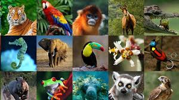

Existen diversos tipos de inteligencia cuando hablamos de ella atribuida al ser humano. Por ejemplo, la inteligencia lingüística (referente a la capacidad comunicativa), la espacial (referente a la capacidad humana de poder observar el mundo y los objetos desde diferentes perspectivas), la lógico-matemática (referente a la habilidad de resolver problemas matemáticos), o la emocional (que engloba la capacidad de conocerse a sí mismo y relacionarse con los demás). Además, existen otros tipos de inteligencia que las personas hemos ido desengranando en la carrera por comprender como funciona nuestra mente y definir algo que es, de por sí, muy abstracto. Pero cuando hablamos de las especies animales todo esto funciona de otro modo. El estudio de la inteligencia animal tiene una larga historia. Desde que Darwin publicara El Origen de las Especies, los científicos han intentado comprender cómo funciona el pensamiento de los animales y sus similitudes o diferencias con el ser humano.